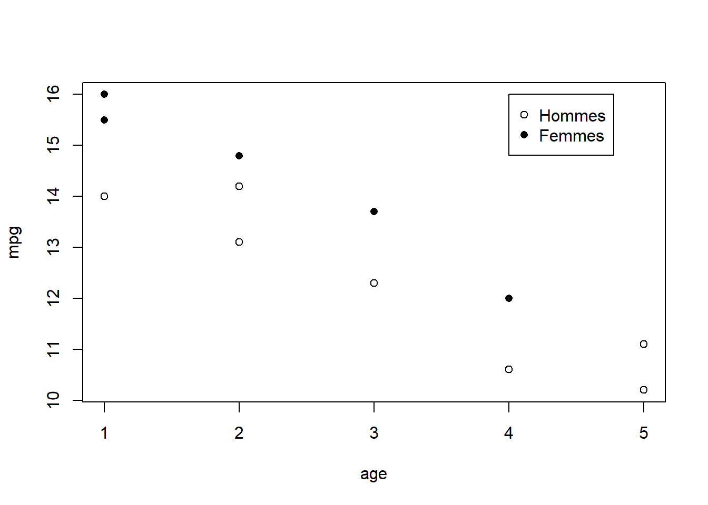
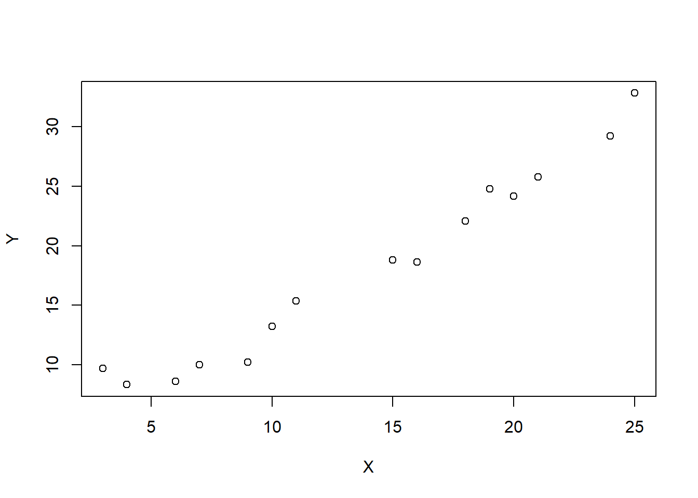
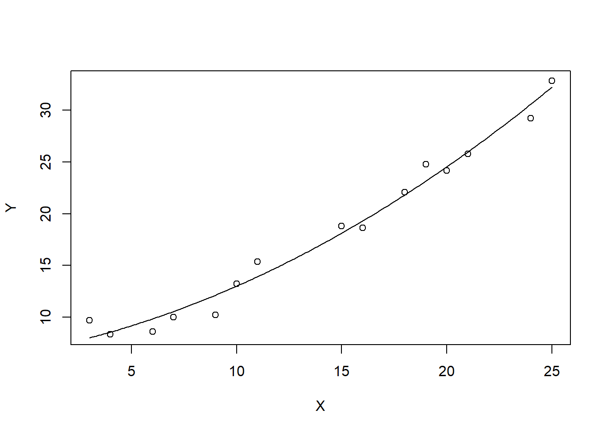
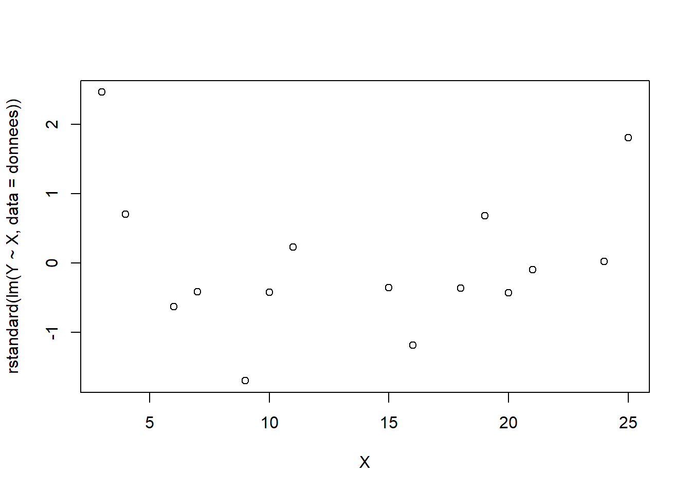
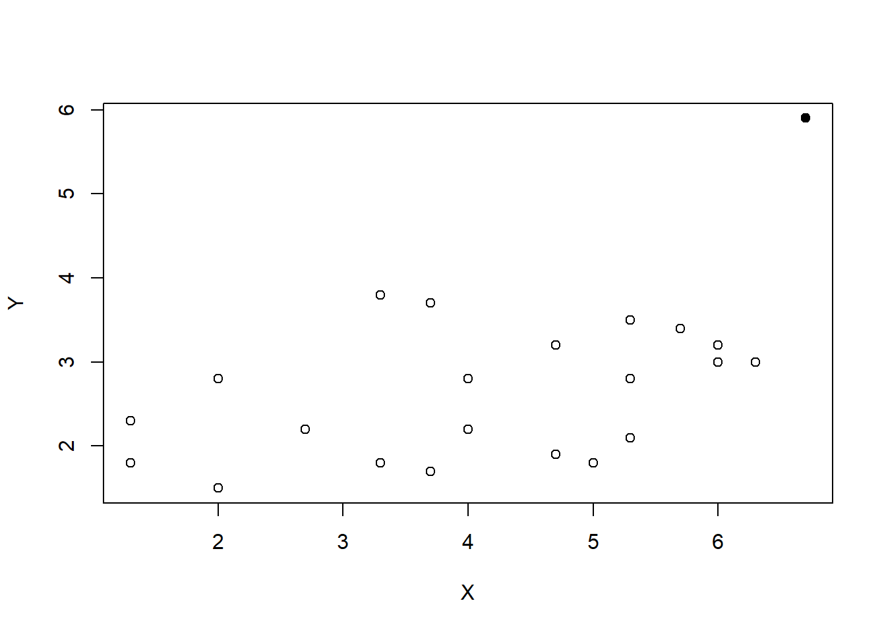
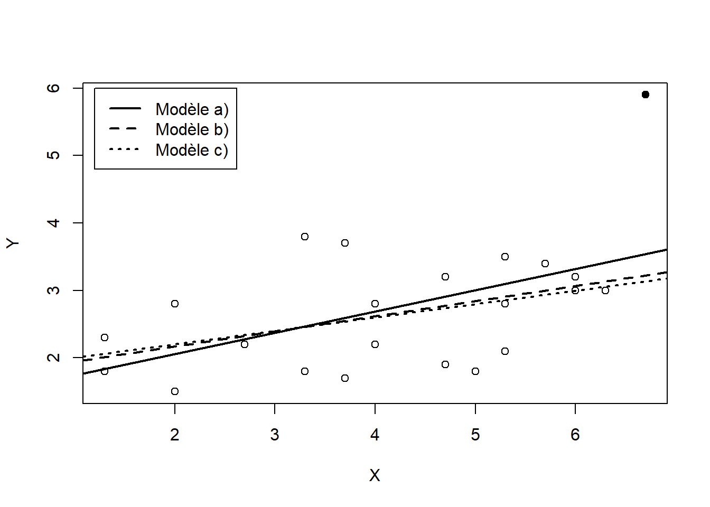

Code
library(knitr)library(knitr)Considérer le modèle de régression linéaire \(\yvec = \Xmat \betavec + \epsvec\), où \(\Xmat\) est une matrice \(n \times (p+1)\). Démontrer, en dérivant \[ \begin{aligned} S(\betavec) &= \sum_{i=1}^n (Y_i - \xvec_i^\top \betavec)^2 \\ &= (\yvec - \Xmat \betavec)^\top (\yvec - \Xmat \betavec) \end{aligned} \] par rapport à \(\betavec\), que les équations normales à résoudre pour obtenir l’estimateur des moindres carrés de \(\betavec\) sont, sous forme matricielle, \[ (\Xmat^\top \Xmat) \hatbetavec = \Xmat^\top \yvec, \]
Déduire l’estimateur des moindres carrés de ces équations.
Astuce: utiliser le théorème Dérivée d’une fonction dans l’annexe.
Tout d’abord, selon le théorème, \[ \frac{d}{d \Xmat} f(\Xmat)^\top \mat{A} f(\Xmat) = 2 \left( \frac{d}{d \Xmat} f(\Xmat) \right)^\top \mat{A} f(\Xmat). \]
Il suffit, pour faire la démonstration, d’appliquer directement ce résultat à la forme quadratique \[ S(\betavec) = (\yvec - \Xmat \betavec)^\top (\yvec - \Xmat \betavec) \]
avec \(f(\betavec) = \yvec - \Xmat \betavec\) et \(\mat{A} = \mat{I}\), la matrice identité. On a alors
\[ \begin{aligned} \frac{d}{d\betavec} S(\betavec) &= 2 \left( \frac{d}{d\betavec} (\yvec - \Xmat \betavec) \right)^\top (\yvec - \Xmat \betavec) \\ &= 2 (-\Xmat)^\top (\yvec - \Xmat \betavec)\\ &= -2 \Xmat^\top (\yvec - \Xmat \betavec). \end{aligned} \]
En posant ces dérivées exprimées sous forme matricielle simultanément égales à zéro, on obtient les équations normales à résoudre pour calculer l’estimateur des moindres carrés du vecteur \(\betavec\), soit \[ \Xmat^\top \Xmat \hatbetavec = \Xmat^\top \yvec. \] En isolant \(\hatbetavec\) dans l’équation ci-dessus, on obtient, finalement, l’estimateur des moindres carrés: \[ \hatbetavec = (\Xmat^\top \Xmat)^{-1} \Xmat^\top \yvec. \]
Pour chacun des modèles de régression ci-dessous, spécifier la matrice d’incidence \(\Xmat\) dans la représentation \(\yvec =\Xmat \betavec + \epsvec\) du modèle, puis obtenir, si possible, les formules explicites des estimateurs des moindres carrés des paramètres.
a) \(Y_i = \beta_0 + \varepsilon_i\)
b) \(Y_i = \beta_1 x_i + \varepsilon_i\)
c) \(Y_i = \beta_0 + \beta_1 x_{i1} + \beta_2 x_{i2} + \varepsilon_i\)
a) \(\hat{\beta}_0 = \bar{Y}\)
b) \(\hat{\beta}_1 = (\sum_{i=1}^n x_i Y_i)/(\sum_{i=1}^n x_i^2)\)
a) On a un modèle sans variable explicative. Intuitivement, la meilleure prévision de \(Y_i\) sera alors \(\bar{Y}\). En effet, pour ce modèle,
\[ \Xmat = \begin{bmatrix} 1 \\ \vdots \\ 1 \end{bmatrix}_{n \times 1} \]
et
\[ \begin{aligned} \hatbetavec &=\left(\Xmat^\top \Xmat \right)^{-1} \Xmat^\top \yvec \\ &= \left( \begin{bmatrix} 1 & \cdots & 1 \end{bmatrix} \begin{bmatrix} 1 \\ \vdots \\ 1 \end{bmatrix} \right)^{-1} \begin{bmatrix} 1 & \cdots & 1 \end{bmatrix} \begin{bmatrix} Y_1 \\ \vdots \\ Y_n \end{bmatrix}\\ &= n^{-1} \sum_{i=1}^n Y_i \\ &= \bar{Y}. \end{aligned} \]
b) Il s’agit du modèle de régression linéaire simple passant par l’origine, pour lequel la matrice d’incidence est
\[ \Xmat = \begin{bmatrix} x_1 \\ \vdots \\ x_n \end{bmatrix}_{n \times 1}. \]
Par conséquent, \[ \begin{aligned} \hatbetavec &= \left( \begin{bmatrix} x_1 & \cdots & x_n \end{bmatrix} \begin{bmatrix} x_1 \\ \vdots \\ x_n \end{bmatrix} \right)^{-1} \begin{bmatrix} x_1 & \cdots & x_n \end{bmatrix} \begin{bmatrix} Y_1 \\ \vdots \\ Y_n \end{bmatrix} \\ &= \left( \sum_{i=1}^n x_i^2 \right)^{-1} \sum_{i=1}^n x_iY_i \\ &= \frac{\sum_{i=1}^n x_i Y_i}{\sum_{i=1}^n x_i^2}, \end{aligned} \]
tel qu’obtenu à l’exercice 2.3.
c) On est ici en présence d’un modèle de régression multiple ne passant pas par l’origine et ayant deux variables explicatives. La matrice d’incidence est alors
\[ \Xmat = \begin{bmatrix} 1 & x_{11} & x_{12} \\ \vdots & \vdots & \vdots \\ 1 & x_{n1} & x_{n2} \end{bmatrix}_{n \times 3}. \]
Par conséquent,
\[ \begin{aligned} \hatbetavec &= \left( \begin{bmatrix} 1 & \cdots & 1 \\ x_{11} & \cdots & x_{n1} \\ x_{12} & \cdots & x_{n2} \end{bmatrix} \begin{bmatrix} 1 & x_{11} & x_{12} \\ \vdots & \vdots & \vdots \\ 1 & x_{n1} & x_{n2} \end{bmatrix} \right)^{-1} \begin{bmatrix} 1 & \cdots & 1 \\ x_{11} & \cdots & x_{n1} \\ x_{12} & \cdots & x_{n2} \end{bmatrix} \begin{bmatrix} Y_1 \\ \vdots \\ Y_n \end{bmatrix} \\ & = \begin{bmatrix} n & n \bar{x}_1 & n \bar{x}_2 \\ n \bar{x}_1 & \sum_{i=1}^n x_{i1}^2 & \sum_{i=1}^n x_{i1}x_{i2} \\ n \bar{x}_2 & \sum_{i=1}^n x_{i1}x_{i2} & \sum_{i=1}^n x_{i2}^2 \end{bmatrix}^{-1} \begin{bmatrix} \sum_{i=1}^n Y_i \\ \sum_{i=1}^n x_{i1}Y_i \\ \sum_{i=1}^n x_{i2}Y_i \end{bmatrix}. \end{aligned} \]
L’inversion de la première matrice et le produit par la seconde sont laissés aux bons soins du lecteur plus patient que les rédacteurs de ces solutions.
Vérifier, pour le modèle de régression linéaire simple, que les valeurs trouvées dans la matrice de variance-covariance \(\var{\hatbetavec} = \sigma^2 (\Xmat^\top \Xmat)^{-1}\) correspondent à celles calculées au chapitre 2.
Dans le modèle de régression linéaire simple, la matrice schéma est \[ \Xmat = \begin{bmatrix} 1 & x_1 \\ \vdots & \vdots \\ 1 & x_n \end{bmatrix}. \] Par conséquent, \[ \begin{aligned} \var{\hatbetavec} &= \sigma^2 (\Xmat^\top \Xmat)^{-1} \\ &= \sigma^2 \left( \begin{bmatrix} 1 & \cdots & 1 \\ x_1 & \cdots & x_n \end{bmatrix} \begin{bmatrix} 1 & x_1 \\ \vdots & \vdots \\ 1 & x_n \end{bmatrix} \right)^{-1} \\ &= \sigma^2 \begin{bmatrix} n & n \bar{x} \\ n \bar{x} & \sum_{i=1}^n x_i^2 \end{bmatrix}^{-1}\\ &= \frac{\sigma^2}{n \sum_{i=1}^n x_i^2 - n^2 \bar{x}^2} \begin{bmatrix} \sum_{i=1}^n x_i^2 & -n \bar{x} \\ -n \bar{x} & n \end{bmatrix} \\ &= \frac{\sigma^2}{\sum_{i=1}^n (x_i - \bar{x}^2)} \begin{bmatrix} n^{-1} \sum_{i=1}^n x_i^2 & -\bar{x} \\ -\bar{x} & 1 \end{bmatrix}, \end{aligned} \] d’où
\[ \begin{aligned} \var{\hat{\beta}_0} &= \sigma^2 \frac{\sum_{i=1}^n x_i^2}{ n \sum_{i=1}^n (x_i - \bar{x})^2} \\ &= \sigma^2 \frac{\sum_{x=1}^n (x_i - \bar{x}^2) + n \bar{x}^2}{ n \sum_{i=1}^n (x_i - \bar{x})^2} \\ \end{aligned} \]
et
\[ \begin{aligned} \var{\hat{\beta}_1} &= \frac{\sigma^2}{\sum_{i=1}^n (x_i - \bar{x})^2}. \end{aligned} \] Ceci correspond aux résultats antérieurs.
Démontrer les relations ci-dessous dans le contexte de la régression linéaire multiple et trouver leur équivalent en régression linéaire simple. Utiliser \(\hatepsvec = \yvec - \hat\yvec\).
a) \(\Xmat^\top \hatepsvec = 0\)
b) \(\hat\yvec^\top \hatepsvec = 0\)
c) \(\hat\yvec^\top \hat\yvec = \hatbetavec^\top \Xmat^\top \yvec\)
Dans les démonstrations qui suivent, trois relations de base seront utilisées : \(\hatepsvec = \yvec - \hat\yvec\), \(\hat\yvec = \Xmat \hatbetavec\) et \(\hatbetavec = (\Xmat^\top \Xmat)^{-1} \Xmat^\top \yvec\).
a) On a \[ \begin{aligned} \Xmat^\top \hatepsvec &= \Xmat^\top (\yvec - \hat\yvec) \\ &= \Xmat^\top (\yvec - \Xmat \hatbetavec) \\ &= \Xmat^\top \yvec - (\Xmat^\top \Xmat) \hatbetavec \\ &= \Xmat^\top \yvec - (\Xmat^\top \Xmat) (\Xmat^\top \Xmat)^{-1} \Xmat^\top \yvec \\ &= \Xmat^\top \yvec - \Xmat^\top \yvec \\ &= \mat{0}. \end{aligned} \]
En régression linéaire simple, cela donne \[ \begin{aligned} \Xmat^\top \hatepsvec &= \begin{bmatrix} 1 & \cdots & 1 \\ x_1 & \cdots & x_n \end{bmatrix} \begin{bmatrix} \hat\varepsilon_1 \\ \vdots \\ \hat\varepsilon_n \end{bmatrix} \\ &= \begin{bmatrix} \sum_{i=1}^n \hat\varepsilon_i \\ \sum_{i=1}^n x_i \hat\varepsilon_i \end{bmatrix}. \end{aligned} \]
Par conséquent, \(\Xmat^\top \hatepsvec = \mat{0}\) se simplifie en \(\sum_{i=1}^n \hat\varepsilon_i = 0\) et \(\sum_{i=1}^n x_i \hat\varepsilon_i = 0\) soit, respectivement, la condition pour que l’estimateur des moindres carrés soit sans biais et la seconde équation normale obtenue à l’exercice 2.1.
b) On a \[ \begin{aligned} \hat{\yvec}^\top \hatepsvec &= (\Xmat\hatbetavec)^\top (\yvec - \hat\yvec) \\ &= \hatbetavec^\top \Xmat^\top (\yvec - \Xmat\hatbetavec) \\ &= \hatbetavec^\top \Xmat^\top \yvec - \hatbetavec^\top (\Xmat^\top \Xmat) \hatbetavec \\ &= \hatbetavec^\top \Xmat^\top \yvec - \hatbetavec^\top (\Xmat^\top \Xmat) (\Xmat^\top \Xmat)^{-1} \Xmat^\top \yvec \\ &= \hatbetavec^\top \Xmat^\top \yvec - \hatbetavec^\top \Xmat^\top \yvec \\ &= 0. \end{aligned} \]
Pour tout modèle de régression cette équation peut aussi s’écrire sous la forme plus conventionnelle \(\sum_{i=1}^n \hat{Y}_i \hat\varepsilon_i = 0\). Cela signifie que le produit scalaire entre le vecteur des prévisions et celui des erreurs doit être nul ou, autrement dit, que les vecteurs doivent être orthogonaux. C’est là une condition essentielle pour que l’erreur quadratique moyenne entre les vecteurs \(\yvec\) et \(\hat\yvec\) soit minimale. D’ailleurs, on constate que \(\hat{\yvec}^\top \hatepsvec = \hatbetavec^\top \Xmat^\top \hatepsvec\) et donc, en supposant sans perte de généralité que \(\hatbetavec \ne \mat{0}\), que \(\hat{\yvec}^\top \hatepsvec = 0\) et \(\Xmat^\top \hatepsvec = \mat{0}\) sont des conditions en tous points équivalentes.
c) On a \[ \begin{aligned} \hat\yvec^\top \hat\yvec &= (\Xmat \hatbetavec)^\top \Xmat \hatbetavec \\ &= \hatbetavec^\top (\Xmat^\top \Xmat) \hatbetavec \\ &= \hatbetavec^\top (\Xmat^\top \Xmat) (\Xmat^\top \Xmat)^{-1} \Xmat^\top \yvec \\ &= \hatbetavec^\top \Xmat^\top \yvec. \end{aligned} \]
Cette équation est l’équivalent matriciel de l’identité \[ \begin{aligned} \SSR &= \hat{\beta}_1^2 \sum_{i = 1}^n (x_i - \bar{x})^2 \\ &= \frac{S_{xy}^2}{S_{xx}} \end{aligned} \]
utilisée à plusieurs reprises dans les solutions du chapitre 2. En effet, en régression linéaire simple, \(\hat\yvec^\top \hat\yvec = \sum_{i = 1}^n \hat{Y}_i^2 = \sum_{i = 1}^n (\hat{Y} - \bar{Y})^2 + n \bar{Y}^2 = \SSR + n \bar{Y}^2\) et \[ \begin{aligned} \hatbetavec^\top \Xmat^\top \yvec &= \hat{\beta}_0 n \bar{Y} + \hat{\beta}_1 \sum_{i = 1}^n x_i Y_i \\ &= (\bar{Y} - \hat{\beta}_1 \bar{x}) n \bar{Y} + \hat{\beta}_1 \sum_{i = 1}^n x_i Y_i \\ &= \hat{\beta}_1 \sum_{i = 1}^n (x_i - \bar{x})(Y_i - \bar{Y}) + n \bar{Y}^2 \\ &= \frac{S_{xy}^2}{S_{xx}} + n \bar{Y}^2, \end{aligned} \]
d’où \(\SSR = S_{xy}^2/S_{xx}\).
En régression linéaire multiple, on a \(\hatbetavec \sim \Norm(\betavec, \sigma^2 (\Xmat^\top \Xmat)^{-1})\) et \(\SSE/\sigma^2 \sim \chi^2(n - p - 1)\).
a) Vérifier que \[ \frac{\hat{\beta_i} - \beta_i}{s \sqrt{c_{ii}}} \sim t(n - p - 1), \quad i = 0, 1, \dots, p, \] où \(c_{ii}\) est le \((i + 1)\)ème élément de la diagonale de la matrice \((\Xmat^\top \Xmat)^{-1}\) et \(s^2 = \MSE\).
b) Que vaut \(c_{11}\) en régression linéaire simple? Adapter le résultat ci-dessus à ce modèle.
a) Tout d’abord, si \(Z \sim \Norm(0,1)\) et \(V \sim \upchi^2(r)\) alors, par définition, \[ \frac{Z}{\sqrt{V/r}} \sim t(r). \]
Tel que mentionné dans l’énoncé, \(\hat{\beta}_i \sim \Norm(\beta_i, \sigma^2 c_{ii})\) ou, de manière équivalente, \[ \frac{\hat{\beta}_i - \beta_i}{\sigma \sqrt{c_{ii}}} \sim N(0, 1). \]
Par conséquent,
\[ \frac{\frac{\hat{\beta}_i - \beta_i}{\sigma \sqrt{c_{ii}}}}{ \sqrt{\frac{\SSE}{\sigma^2(n - p - 1)}}} = \frac{\hat{\beta}_i - \beta_i}{s \sqrt{c_{ii}}} \sim t(n - p - 1). \]
b) En régression linéaire simple, \(c_{11} = 1/\sum_{i = 1}^n (x_i - \bar{x})^2 = 1/S_{xx}\) et \(\sigma^2 c_{11} = \var{\hat{\beta}_1}\). Le résultat général en a) se réduit donc, en régression linéaire simple, au résultat bien connu du test \(t\) sur le paramètre \(\beta_1\)
\[ \frac{\hat{\beta}_1 - \beta_1}{s \sqrt{1/S_{xx}}} \sim t(n - 1 - 1). \]
Considérer le modèle de régression linéaire multiple présenté à l’exercice 3.1. Soit \(\hat{Y}_0\) la prévision de la variable dépendante correspondant aux valeurs du vecteur colonne \(\xvec_0^\top = (1, x_{01}, \dots, x_{0p})\) des \(p\) variables indépendantes. On a donc \[ \hat{Y}_0 = \xvec_0^\top \hatbetavec. \]
a) Démontrer que \(\esp{\hat{Y}_0} = \esp{Y_0}\).
b) Démontrer que l’erreur dans la prévision de la valeur moyenne de \(Y_0\) est \[ \esp{(\hat{Y}_0 - \esp{Y_0})^2} = \sigma^2 \xvec_0^\top (\Xmat^\top \Xmat)^{-1} \xvec_0. \]
Construire un intervalle de confiance de niveau \(1 - \alpha\) pour \(\esp{Y_0}\).
c) Démontrer que l’erreur dans la prévision de \(Y_0\) est
\[ \esp{(Y_0 - \hat{Y}_0)^2} = \sigma^2(1 + \xvec_0^\top (\Xmat^\top \Xmat)^{-1} \xvec_0). \]
Construire un intervalle de confiance de niveau \(1 - \alpha\) pour \(Y_0\).
a) Premièrement, \(Y_0 = \xvec_0^\top \betavec + \varepsilon_0\) avec \(\esp{\varepsilon_0} = 0\). Par conséquent, \(\esp{Y_0} = \esp{\xvec_0^\top \betavec + \varepsilon_0} = \xvec_0^\top \betavec\). Deuxièmement, \(\esp{\hat{Y}_0} = \esp{\xvec_0^\top \hatbetavec} = \xvec_0^\top \esp{\hatbetavec} = \xvec_0^\top \betavec\) puisque l’estimateur des moindres carrés de \(\betavec\) est sans biais. Ceci complète la preuve.
b) Tout d’abord, \(\esp{(\hat{Y}_0 - \esp{Y_0})^2} = \varmat{\hat{Y}_0} = \var{\hat{Y}_0}\) puisque la matrice de variance-covariance du vecteur aléatoire \(\hat{Y}_0\) ne contient, ici, qu’une seule valeur. Or, par le théorème de l’annexe, la variance est
\[ \begin{aligned} \var{\hat{Y}_0} &= \varmat{\xvec_0^\top \hatbetavec} \\ &= \xvec_0^\top \varmat{\hatbetavec} \xvec_0 \\ &= \sigma^2 \xvec_0^\top (\Xmat^\top \Xmat)^{-1} \xvec_0. \end{aligned} \]
Afin de construire un intervalle de confiance pour \(\esp{Y_0}\), on ajoute au modèle l’hypothèse \(\epsvec \sim \Norm(\mat{0}, \sigma^2 \mat{I})\). Par linéarité de l’estimateur des moindres carrés, on a alors \(\hat{Y}_0 \sim \Norm(\esp{Y_0}, \var{\hat{Y}_0})\). Par conséquent,
\[ \Pr \left[ -z_{\alpha/2} \leq \frac{\hat{Y} - \esp{\hat{Y}_0}}{\sqrt{\var{\hat{Y}_0}}} \leq z_{\alpha/2} \right] = 1 - \alpha \]
d’où un intervalle de confiance de niveau \(1 - \alpha\) pour \(\esp{Y_0}\) est
\[ \esp{Y_0} \in \hat{Y}_0 \pm z_{\alpha/2} \sigma \sqrt{\xvec_0^\top (\Xmat^\top \Xmat)^{-1} \xvec_0}. \]
Si la variance \(\sigma^2\) est inconnue et estimée par \(s^2\), alors la distribution normale est remplacée par une distribution de Student avec \(n - p - 1\) degrés de liberté. L’intervalle de confiance devient alors
\[ \esp{Y_0} \in \hat{Y}_0 \pm t_{\alpha/2}(n - p - 1) s\sqrt{\xvec_0^\top (\Xmat^\top \Xmat)^{-1} \xvec_0}. \]
c) Par le résultat obtenu en a) et en supposant que \(\cov{\varepsilon_0, \varepsilon_i} = 0\) pour tout \(i = 1, \dots, n\), on a
\[ \begin{aligned} \esp{(Y_0 - \hat{Y}_0)^2} &= \var{Y_0 - \hat{Y}_0} \\ &= \var{Y_0} + \var{\hat{Y}_0} \\ &= \sigma^2 (1 + \xvec_0^\top (\Xmat^\top \Xmat)^{-1} \xvec_0). \end{aligned} \]
Ainsi, avec l’hypothèse sur le terme d’erreur énoncée en b), \(Y_0 - \hat{Y}_0 \sim \Norm(0, \var{Y_0 - \hat{Y}_0})\). En suivant le même cheminement qu’en b), on détermine qu’un intervalle de confiance de niveau \(1 - \alpha\) pour \(Y_0\) est \[ Y_0 \in \hat{Y}_0 \pm z_{\alpha/2} \sigma \sqrt{1 + \xvec_0^\top (\Xmat^\top \Xmat)^{-1} \xvec_0}. \]
ou, si la variance \(\sigma^2\) est inconnue et estimée par \(s^2\),
\[ Y_0 \in \hat{Y}_0 \pm t_{\alpha/2}(n - p - 1) s\sqrt{1 + \xvec_0^\top (\Xmat^\top \Xmat)^{-1} \xvec_0}. \]
En ajustant le modèle \[ Y_i = \beta_0 + \beta_1 x_{i1} + \beta_2 x_{i2} + \beta_3 x_{i3} + \varepsilon_i \] à un ensemble de données, on a obtenu les statistiques suivantes : \[ \begin{aligned} R^2 &= 0,521 \\ F &= 5,438. \end{aligned} \] Déterminer le seuil approximatif du test global de validité du modèle.
\(p \approx 0,01\)
On a la relation suivante liant la statistique \(F\) et le coefficient de détermination \(R^2\): \[
F = \frac{R^2}{1 - R^2} \frac{n - p - 1}{p}
\] La principale inconnue dans le problème est \(n\), le nombre de données. Or, \[
\begin{aligned}
n
&= p F \left( \frac{1 - R^2}{R^2} \right) + p + 1 \\
&= 3 (5,438) \left( \frac{1 - 0,521}{0,521} \right) + 3 + 1 \\
&= 19.
\end{aligned}
\] Soit \(F\) une variable aléatoire dont la distribution est une loi de Fisher avec \(3\) et \(19 - 3 - 1 = 15\) degrés de liberté, soit la même distribution que la statistique \(F\) du modèle. On obtient le seuil observé du test global de validité du modèle dans un tableau de quantiles de la distribution \(F\) ou avec la fonction pf dans R : \[
\begin{aligned}
\Pr[F > 5,438] = 0,0099
\end{aligned}
\]
On vous donne les observations suivantes :
| \(Y\) | \(x_1\) | \(x_2\) |
|---|---|---|
| 17 | 4 | 9 |
| 12 | 3 | 10 |
| 14 | 3 | 11 |
| 13 | 3 | 11 |
De plus, si \(\Xmat\) est la matrice d’incidence du modèle \[ Y_i = \beta_0 + \beta_1 x_{i1} + \beta_2 x_{i2} + \varepsilon_i, \quad i = 1, 2, 3, 4, \]
où \(\varepsilon_i \sim \Norm(0, \sigma^2)\), alors \[ \begin{aligned} (\Xmat^\top \Xmat)^{-1} &= \frac{1}{2} \left[ \begin{array}{rrr} 765 & -87 & -47 \\ -87 & 11 & 5 \\ -47 & 5 & 3 \end{array} \right] \end{aligned} \]
et
\[ \begin{aligned} (\Xmat^\top \Xmat)^{-1} \Xmat^\top &= \frac{1}{2} \left[ \begin{array}{rrrr} -6 & 34 & -13 & -13 \\ 2 & -4 & 1 & 1 \\ 0 & -2 & 1 & 1 \end{array} \right] \end{aligned} \]
a) Trouver, par la méthode des moindres carrés, les estimateurs des paramètres du modèle mentionné ci-dessus.
b) Construire le tableau d’analyse de variance du modèle obtenu en a) et calculer le coefficient de détermination.
c) Vérifier si la variable \(x_1\) est significative dans le modèle. Refaire pour la variable \(x_2\).
d) Trouver un intervalle de confiance à 95 % pour la valeur de \(Y\) lorsque \(x_1 = 3,5\) et \(x_2 = 9\).
a) \(\hatbetavec = (-22,5,\; 6,5,\; 1,5)\)
b) \(F = 13,5\), \(R^2 = 0,9643\)
c) \(t_1 = 3,920\), \(t_2 = 1,732\)
d) \(13,75 \pm 13,846\)
a) On a \[ \begin{aligned} \hatbetavec &= (\Xmat^\top \Xmat)^{-1} \Xmat^\top \yvec \\ &= \frac{1}{2} \left[ \begin{array}{rrrr} -6 & 34 & -13 & -13 \\ 2 & -4 & 1 & 1 \\ 0 & -2 & 1 & 1 \end{array} \right] \begin{bmatrix} 17 \\ 12 \\ 14 \\ 13 \end{bmatrix} \\ &= \frac{1}{2} \left[ \begin{array}{r} -45 \\ 13 \\ 3 \end{array} \right] = \left[ \begin{array}{r} -22,5 \\ 6,5 \\ 1,5 \end{array} \right] \end{aligned} \]
b) Avec les résultats de la partie a), on a \[ \begin{aligned} \hat\yvec &= \Xmat \hatbetavec = \begin{bmatrix} 17 \\ 12 \\ 13,5 \\ 13,5 \end{bmatrix}, \\ \hatepsvec &= \yvec - \hat\yvec = \left[ \begin{array}{r} 0 \\ 0 \\ 0,5 \\ -0,5 \end{array} \right] \end{aligned} \]
et \(\bar{Y} = 14\). Par conséquent,
\[ \begin{aligned} \SST &= \yvec^\top \yvec - n \bar{Y}^2 = 14 \\ \SSE &= \hatepsvec^\top \hatepsvec = 0,5 \\ \SSR &= \SST - \SSR = 13,5, \end{aligned} \]
d’où le tableau d’analyse de variance suivant :
| Source | SS | d.l. | MS | F |
|---|---|---|---|---|
| Régression | 13.5 | 2 | 6.75 | 13.5 |
| Erreur | 0.5 | 1 | 0.50 | NA |
| Total | 14.0 | NA | NA | NA |
Le coefficient de détermination est \[ R^2 = 1 - \frac{\SSE}{\SST} = 0,9643. \]
c) On sait que \(\var{\hat{\beta}_i} = \sigma^2 c_{ii}\), où \(c_{ii}\) est l’élément en position \((i+1, i+1)\) de la matrice \((\Xmat^\top \Xmat)^{-1}\). Or, \(\hat{\sigma}^2 = s^2 = \MSE = 0,5\), tel que calculé en b). Par conséquent, la statistique \(t\) du test \(H_0: \beta_1 = 0\) est
\[ t = \frac{\hat{\beta}_1}{s \sqrt{c_{11}}} = \frac{6,5}{\sqrt{0,5 (\frac{11}{2})}} = 3,920, \]
alors que celle du test \(H_0: \beta_2 = 0\) est
\[ t = \frac{\hat{\beta}_2}{s \sqrt{c_{22}}} = \frac{1,5}{\sqrt{0,5 (\frac{3}{2})}} = 1,732. \]
À un niveau de signification de 5 %, la valeur critique de ces tests est \(t_{0,025}(1) = 12,706\). Dans les deux cas, on ne rejette donc pas \(H_0\), les variables \(x_1\) et \(x_2\) ne sont pas significatives dans le modèle.
d) Soit \(\xvec_0^\top = \begin{bmatrix} 1 & 3,5 & 9 \end{bmatrix}\) et \(Y_0\) la valeur de la variable dépendante correspondant à \(x_0\). La prévision de \(Y_0\) donnée par le modèle trouvé en a) est
\[ \begin{aligned} \hat{Y}_0 &= \xvec_0^\top \hatbetavec \\ &= -22,5 + 6,5(3,5) + 1,5(9) \\ &= 13,75. \end{aligned} \]
D’autre part, \[ \begin{aligned} \widehat{\text{var}}(Y_0 - \hat{Y}_0) &= s^2 (1 + \xvec_0^\top (\Xmat^\top \Xmat)^{-1} \xvec_0) \\ &= 1,1875. \end{aligned} \]
Par conséquent, un intervalle de confiance à 95 % pour \(Y_0\) \[ \begin{aligned} Y_0 &\in \hat{Y}_0 \pm t_{0,025}(1) s \sqrt{1 + \xvec_0^\top (\Xmat^\top \Xmat)^{-1} \xvec_0} \\ &\in 13,75 \pm 12,706 \sqrt{1,1875} \\ &\in (-0,096, 27,596). \end{aligned} \]
Répéter l’exercice 2.20 en ajoutant la cylindrée du véhicule en litres dans le modèle. La cylindrée est exprimée en pouces cubes dans les données. Or, 1 pouce correspond à 2,54 cm et un litre est définit comme étant 1 \(\text{dm}^3\), soit 1000 \(\text{cm}^3\). Trouver un intervalle de confiance pour la consommation en carburant d’une voiture de kg ayant un moteur de 1,8 litre.
b) \(R^2 = 0,8927\) et \(F = 145,6\)
c) \(12,04 \pm 2,08\)
a) On importe les données dans R, puis on effectue les conversions nécessaires. Comme précédemment, la variable consommation contient la consommation des voitures en \(\ell/100\) km et la variable poids le poids en kilogrammes. On ajoute la variable cylindree, qui contient la cylindrée des voitures en litres.
carburant <- read.table("carburant.dat", header = TRUE)
consommation <- 235.1954/carburant$mpg
poids <- carburant$poids * 0.45455 * 1000
cylindree <- carburant$cylindree * 2.54^3/1000 b) La fonction summary fournit l’information essentielle pour juger de la validité et de la qualité du modèle :
fit <- lm(consommation ~ poids + cylindree)
summary(fit)
Call:
lm(formula = consommation ~ poids + cylindree)
Residuals:
Min 1Q Median 3Q Max
-1.8799 -0.5595 0.1577 0.6051 1.7900
Coefficients:
Estimate Std. Error t value Pr(>|t|)
(Intercept) -3.049304 1.098281 -2.776 0.00877 **
poids 0.012677 0.001512 8.386 6.85e-10 ***
cylindree -1.122696 0.333479 -3.367 0.00186 **
---
Signif. codes: 0 '***' 0.001 '**' 0.01 '*' 0.05 '.' 0.1 ' ' 1
Residual standard error: 0.9156 on 35 degrees of freedom
Multiple R-squared: 0.8927, Adjusted R-squared: 0.8866
F-statistic: 145.6 on 2 and 35 DF, p-value: < 2.2e-16Le modèle est donc le suivant : \[ Y_i = -3,049+ 0,01268 x_{i1} + -1,123 x_{i2} + \varepsilon_i, \quad \epsvec_i \sim \Norm(0, 0,9156^2 \mat{I}) \] où \(Y_i\) est la consommation en litres aux 100 kilomètres, \(x_{i1}\) le poids en kilogrammes et \(x_{i2}\) la cylindrée en litres. Le faible seuil observé du test \(F\) indique une régression globalement très significative. Les tests \(t\) des paramètres individuels indiquent également que les deux variables du modèle sont significatives. Enfin, le \(R^2\) de 0,8927 confirme que l’ajustement du modèle est toujours bon.
c) On veut calculer un intervalle de confiance pour la consommation prévue d’une voiture de 1350 kg ayant un moteur d’une cylindrée de 1,8 litres. On obtient, avec la fonction predict :
predict(fit, newdata = data.frame(poids = 1350, cylindree = 1.8), interval = "prediction") fit lwr upr
1 12.04325 9.959855 14.12665Dans un exemple du chapitre 2 des notes de cours, nous avons tâché d’expliquer les sinistres annuels moyens par véhicule pour différents types de véhicules uniquement par la puissance du moteur (en chevaux-vapeur). Notre conclusion était à l’effet que la régression était significative — rejet de \(H_0\) dans les tests t et F — mais l’ajustement mauvais — \(R^2\) petit.
Examiner les autres variables fournies dans le fichier auto-price.dat et choisir deux autres caractéristiques susceptibles d’expliquer les niveaux de sinistres. Par exemple, peut-on distinguer une voiture sport d’une minifourgonnette?
Une fois les variables additionnelles choisies, calculer les différentes statistiques propres à une régression en ajoutant d’abord une, puis deux variables au modèle de base. Quelles sont vos conclusions?
Il y a plusieurs réponses possibles pour cet exercice. Si l’on cherche, tel que suggéré dans l’énoncé, à distinguer les voitures sport des minifourgonnettes (en supposant que ces dernières ont moins d’accidents que les premières), alors on pourrait s’intéresser, en premier lieu, à la variable peak.rpm. Il s’agit du régime moteur maximal, qui est en général beaucoup plus élevé sur les voitures sport. Puisque l’on souhaite expliquer le montant total des sinistres de différents types de voitures, il devient assez naturel de sélectionner également la variable price, soit le prix du véhicule. Un véhicule plus luxueux coûte en général plus cher à faire réparer à dommages égaux. Voyons l’effet de l’ajout, pas à pas, de ces deux variables au modèle précédent ne comportant que la variable horsepower :
autoprice <- read.table("data/auto-price.dat", header = TRUE)
fit1 <- lm(losses ~ horsepower + peak.rpm, data = autoprice)
summary(fit1)
Call:
lm(formula = losses ~ horsepower + peak.rpm, data = autoprice)
Residuals:
Min 1Q Median 3Q Max
-67.973 -24.074 -6.373 18.049 130.301
Coefficients:
Estimate Std. Error t value Pr(>|t|)
(Intercept) 5.521414 29.967570 0.184 0.854060
horsepower 0.318477 0.086840 3.667 0.000336 ***
peak.rpm 0.016639 0.005727 2.905 0.004205 **
---
Signif. codes: 0 '***' 0.001 '**' 0.01 '*' 0.05 '.' 0.1 ' ' 1
Residual standard error: 33.44 on 156 degrees of freedom
Multiple R-squared: 0.1314, Adjusted R-squared: 0.1203
F-statistic: 11.8 on 2 and 156 DF, p-value: 1.692e-05anova(fit1)Analysis of Variance Table
Response: losses
Df Sum Sq Mean Sq F value Pr(>F)
horsepower 1 16949 16948.5 15.1573 0.0001463 ***
peak.rpm 1 9437 9437.0 8.4397 0.0042049 **
Residuals 156 174435 1118.2
---
Signif. codes: 0 '***' 0.001 '**' 0.01 '*' 0.05 '.' 0.1 ' ' 1La variable peak.rpm est significative, mais le \(R^2\) demeure faible. Ajoutons maintenant la variable price au modèle :
fit2 <- lm(losses ~ horsepower + peak.rpm + price, data = autoprice)
summary(fit2)
Call:
lm(formula = losses ~ horsepower + peak.rpm + price, data = autoprice)
Residuals:
Min 1Q Median 3Q Max
-66.745 -25.214 -5.867 18.407 130.032
Coefficients:
Estimate Std. Error t value Pr(>|t|)
(Intercept) -0.6972172 31.3221462 -0.022 0.98227
horsepower 0.2414922 0.1408272 1.715 0.08838 .
peak.rpm 0.0181386 0.0061292 2.959 0.00357 **
price 0.0005179 0.0007451 0.695 0.48803
---
Signif. codes: 0 '***' 0.001 '**' 0.01 '*' 0.05 '.' 0.1 ' ' 1
Residual standard error: 33.49 on 155 degrees of freedom
Multiple R-squared: 0.1341, Adjusted R-squared: 0.1173
F-statistic: 8.001 on 3 and 155 DF, p-value: 5.42e-05anova(fit2)Analysis of Variance Table
Response: losses
Df Sum Sq Mean Sq F value Pr(>F)
horsepower 1 16949 16948.5 15.1071 0.0001502 ***
peak.rpm 1 9437 9437.0 8.4118 0.0042702 **
price 1 542 542.1 0.4832 0.4880298
Residuals 155 173893 1121.9
---
Signif. codes: 0 '***' 0.001 '**' 0.01 '*' 0.05 '.' 0.1 ' ' 1Du moins avec les variables horsepower et peak.rpm, la variable price n’est pas significative. D’ailleurs, l’augmentation du \(R^2\) suite à l’ajout de cette variable est minime. À ce stade de l’analyse, il vaudrait sans doute mieux reprendre tout depuis le début avec d’autres variables. Des méthodes de sélection des variables seront étudiées dans les chapitres suivants.
En bon étudiant(e), vous vous intéressez à la relation liant la demande pour la bière, \(Y\), aux variables indépendantes \(x_1\) (le prix de celle-ci), \(x_2\) (le revenu disponible) et \(x_3\) (la demande de l’année précédente). Un total de 20 observations sont disponibles. Vous postulez le modèle \[ Y_i = \beta_0 + \beta_1 x_{i1} + \beta_2 x_{i2} + \beta_3 x_{i3} + \varepsilon_i, \]
où \(\esp{\varepsilon_i} = 0\) et \(\cov{\varepsilon_i, \varepsilon_j}= \delta_{ij} \sigma^2\). Les résultats de cette régression, tels que calculés dans R, sont fournis ci-dessous.
fit <- lm(Y ~ X1 + X2 + X3, data = biere)
summary(fit)Call: lm(formula = Y ~ X1 + X2 + X3, data = biere)
Residuals:
Min. 1st Qu. Median 3rd Qu. Max.
-1.014e+04 -5.193e-03 -2.595e-03 4.367e-03 2.311e-02
Coefficients:
Value Std. Error t value Pr(>|t|)
(Intercept) 1.5943 1.0138 1.5726 0.1354
X1 -0.0480 0.1479 -0.3243 0.7499
X2 0.0549 0.0306 1.7950 0.0916
X3 0.8130 0.1160 7.0121 2.933e-06
Residual standard error: 0.0098 on 16 degrees of freedom
Multiple R-Squared: 0.9810 Adjusted R-squared: 0.9774
F-statistic: 275.49 on 3 and 16 degrees of freedom,
the p-value is 7.160e-14a) Indiquer les dimensions des matrices et vecteurs dans la représentation matricielle \(\yvec = \Xmat \betavec + \epsvec\) du modèle.
b) La régression est-elle significative? Expliquer.
c) On porte une attention plus particulière au paramètre \(\beta_2\). Est-il significativement différent de zéro? Quelle est l’interprétation du test \(H_0~: \beta_2 = 0\) versus \(H_1~: \beta_2 \ne 0\)?
d) Quelle est la valeur et l’interprétation de \(R^2\), le coefficient de détermination? De manière générale, est-il envisageable d’obtenir un \(R^2\) élevé et, simultanément, toutes les statistiques \(t\) pour les tests \(H_0: \beta_1 = 0\), \(H_0: \beta_2 = 0\) et \(H_0: \beta_3 = 0\) non significatives? Expliquer brièvement.
a) \(\yvec_{20 \times 1}\), \(\Xmat_{20 \times 4}\), \(\betavec_{4 \times 1}\) et \(\epsvec_{20 \times 1}\)
a) On a \(p = 3\) variables explicatives et, du nombre de degrés de liberté de la statistique \(F\), on apprend que \(n - p - 1 = 16\). Par conséquent, \(n = 16 + 3 + 1 = 20\). Les dimensions des vecteurs et de la matrice d’incidence dans la représentation \(\yvec = \Xmat \betavec + \epsvec\) sont donc: \(n \times 1 = 20 \times 1\) pour les vecteurs \(\yvec\) et \(\epsvec\), \(n \times (p + 1) = 20 \times 4\) pour la matrice \(\Xmat\), \((p + 1) \times 1\) pour le vecteur \(\betavec\).
b) Le seuil observé associé à la statistique \(F\) est, à toute fin pratique, nulle. Cela permet de rejeter facilement l’hypothèse nulle selon laquelle la régression n’est pas significative.
c) On doit se fier ici au résultat du test \(t\) associé à la variable \(x_2\). Dans les résultats obtenus avec R, on voit que le seuil observé du test \(t\) sur le paramètre \(\beta_2\) est \(0,0916\). Cela signifie que jusqu’à un seuil de signification de 9,16 % (ou un niveau de confiance supérieur à 90,84 %), on ne peut rejeter l’hypothèse \(H_0: \beta_2 = 0\) en faveur de \(H_1: \beta_2 \ne 0\). Il s’agit néanmoins d’un cas limite et il est alors du ressort de l’analyste de décider d’inclure ou non le revenu disponible dans le modèle.
d) Le coefficient de détermination est de \(R^2 = 0,981\). Cela signifie que le prix de la bière, le revenu disponible et la demande de l’année précédente expliquent plus de 98 % de la variation de la demande en bière. L’ajustement du modèle aux données est donc particulièrement bon. Il est tout à fait possible d’obtenir un \(R^2\) élevé et, simultanément, toutes les statistiques \(t\) non significatives: comme chaque test \(t\) mesure l’impact d’une variable sur la régression étant donné la présence des autres variables, il suffit d’avoir une bonne variable dans un modèle pour obtenir un \(R^2\) élevé et une ou plusieurs autres variables redondantes avec la première pour rendre les tests \(t\) non significatifs.
Dans une régression multiple avec quatre variables explicatives et 506 données, on a obtenu :
\[ \begin{aligned} \SSR(x_1,x_4) &= 24016 \\ \SSR(x_4) &= 2668 \\ R^2 &= 0,6903 \\ s^2 &= 26,41, \end{aligned} \]
où \(\SSR(x)\) est la somme des carrés de la régression pour le modèle incluant la variable \(x\). Calculer la statistique appropriée pour le test \[ \begin{aligned} H_0 &: \beta_2 = \beta_3 = 0 \\ H_1 &: \beta_2 \ne 0 \text{ ou } \beta_3 \ne 0. \end{aligned} \]
\(103,67\)
La statistique à utiliser pour faire ce test \(F\) partiel est \[ \begin{aligned} F^* &= \frac{\{\SSR(X_1, X_2, X_3, X_4) - \SSR(X_1, X_4)\}/2}{ \MSE} \\ &= \frac{\SSR - \SSR(X_1,X_4)}{2 s^2} \end{aligned} \] où \(\SSR = \SSR(X_1,X_2,X_3,X_4)\). Or, \[ \begin{aligned} R^2 &= \frac{\SSR}{\SST} \\ &= \frac{\SSR}{\SSR + \SSE}, \\ \end{aligned} \]
d’où
\[ \begin{aligned} \SSR &= \frac{R^2}{1 - R^2} \SSE \\ &= \frac{R^2}{1 - R^2} \MSE (n - p - 1) \\ &= \frac{0,6903}{1 - 0,6903} (26,41) (506 - 4 - 1) \\ &= 29492. \end{aligned} \] Par conséquent, \[ \begin{aligned} F^* &= \frac{29492 - 24016}{ (2) (26,41)} \\ &= 103,67. \end{aligned} \]
Au cours d’une analyse de régression, on a colligé les valeurs de trois variables explicatives \(x_1\), \(x_2\) et \(x_3\) ainsi que celles d’une variable dépendante \(Y\). Les résultats suivants ont par la suite été obtenus avec R.
> anova(lm(Y ~ X1, data = foo))
Analysis of Variance Table
Response: Y
Df Sum of Sq Mean Sq F Value Pr(>F)
X1 1 45.59240 45.59240 44.8001 0.000000791 ***
Residuals 23 18.2234 0.79232
---
Signif. codes: 0 '***' 0.001 '**' 0.01 '*' 0.05 '.' 0.1 ' ' 1
> anova(lm(Y ~ X2 + X3, data = foo))
Analysis of Variance Table
Response: Y
Df Sum of Sq Mean Sq F Value Pr(>F)
X2 1 45.59085 45.59085 106.0095 0.0000000007 ***
X3 1 8.76355 8.76355 20.3773 0.0001718416 ***
Residuals 22 9.46140 0.43006
---
Signif. codes: 0 '***' 0.001 '**' 0.01 '*' 0.05 '.' 0.1 ' ' 1
> anova(lm(Y ~ X1 + X2 + X3, data = foo))
\end{verbatim}
\begin{verbatim}
Analysis of Variance Table
Response: Y
Df Sum of Sq Mean Sq F Value Pr(>F)
X1 1 45.59240 45.59240 101.6681 0.0000000 ***
X2 1 0.01842 0.01842 0.0411 0.8413279
X3 1 8.78766 8.78766 19.5959 0.0002342 ***
Residuals 21 9.41731 0.44844
---
Signif. codes: 0 '***' 0.001 '**' 0.01 '*' 0.05 '.' 0.1 ' ' 1a) On considère le modèle complet \(Y = \beta_0 + \beta_1 x_1 + \beta_2 x_2 + \beta_3 x_3 + \varepsilon\). À partir de l’information ci-dessus, calculer la statistique appropriée pour compléter chacun des tests suivants. Indiquer également le nombre de degrés de liberté de cette statistique, Dans tous les cas, la contre-hypothèse \(\mathcal{H}_1\) est la négation de l’hypothèse \(\mathcal{H}_0\).
\(\mathcal{H}_0~: \beta_1 = \beta_2 = \beta_3 = 0\)
\(\mathcal{H}_0~: \beta_1 = 0\)
\(\mathcal{H}_0~: \beta_2 = \beta_3 = 0\)
b) À la lumière des résultats en a), quelle(s) variable(s) devrait-on inclure dans la régression? Justifier votre réponse.
a)
40,44, 3 et 21 degrés de liberté
0,098, 1 et 21 degrés de liberté
9,82, 2 et 21 degrés de liberté
b) \(x_1\) et \(x_3\), ou \(x_2\) et \(x_3\)
a) L’information demandée doit évidemment être extraite des tableaux d’analyse de variance fournis dans l’énoncé. Le résultat de la fonction anova de R est un tableau d’analyse de variance séquentiel, où chaque ligne identifiée par le nom d’une variable correspond au test \(F\) partiel résultant de l’ajout de cette variable au modèle. Ainsi, du deuxième tableau on obtient les sommes de carrés \[\begin{align*}
\SSR(X_2) &= 45,59085 \\
\SSR(X_3,X_2)-\SSR(X_2) &= 8,76355 \\
\text{alors que du troisième tableau on a} &\\
\SSR(X_1) &= 45,59240 \\
\SSR(X_2,X_1)-\SSR(X_1) &= 0,01842 \\
\SSR(X_3,X_1, X_2)-\SSR(X_1,X_2) &= 8,78766,
\end{align*}\]
ainsi que \[\begin{align*} \MSE &= \frac{SSE(X_1, X_2, X_3)}{n - p - 1} \\ &= 0,44844. \end{align*}\]
Le test d’hypothèse \(H_0: \beta_1 = \beta_2 = \beta_3 = 0\) est le test global de validité du modèle. La statistique \(F\) pour ce test est \[\begin{align*} F &= \frac{\SSR(X_1, X_2, X_3)/3}{\MSE} \\ &= \frac{(45,5924 + 0,01842 + 8,78766)/3}{0,44844} \\ &= 40,44. \end{align*}\] Puisque la statistique \(\MSE\) a 21 degrés de liberté, la statistique \(F\) en a 3 et 21.
Pour tester cette hypothèse, il faut utiliser un test \(F\) partiel. On teste si la variable \(X_1\) est significative dans la régression globale. La statistique du test est alors \[\begin{align*} F^* &= \frac{\{\SSR(X_1,X_2,X_3)-\SSR(X_2,X_3)\}/1}{\MSE} \\ &= \frac{54,39848 - 45,59085 - 8,76355}{0,44844} \\ &= 0,098, \end{align*}\] avec 1 et 21 degrés de liberté.
Cette fois, on teste si les variables \(X_2\) et \(X_3\) (les deux ensemble) sont significatives dans la régression globale. On effectue donc encore un test \(F\) partiel avec la statistique \[\begin{align*} F^* &= \frac{\{\SSR(X_2, X_3,X_1)-\SSR(X_1)\}/2}{\MSE} \\ &= \frac{(54,39848 - 45,5924)/2}{0,44844} \\ &= 9,819, \end{align*}\] avec 2 et 21 degrés de liberté.
b) À la lecture du deuxième tableau d’analyse de variance, tant les variables \(x_2\) que \(x_3\) sont significatives dans le modèle. Par contre, comme on le voit dans le troisième tableau, la variable \(x_2\) devient non significative dès lors que la variable \(x_1\) est ajoutée au modèle. (L’impact de la variable \(x_3\) demeure, lui, inchangé.) Cela signifie que les variables \(x_1\) et \(x_2\) sont redondantes et qu’il faut choisir l’une ou l’autre, mais pas les deux. Par conséquent, les choix de modèle possibles sont \(x_1\) et \(x_3\), ou \(x_2\) et \(x_3\).
Une coopérative de taxi new-yorkaise s’intéresse à la consommation de carburant des douze véhicules de sa flotte en fonction de leur âge. Hormis leur âge, les véhicules sont identiques et utilisent tous le même type d’essence. La seule chose autre différence notable d’un véhicule à l’autre est le sexe du conducteur: la coopérative emploie en effet des hommes et des femmes. La coopérative a recueilli les données suivantes afin d’établir un modèle de régression pour la consommation de carburant :
| Consommation..mpg. | Âge.du.véhicule | Sexe.du.conducteur |
|---|---|---|
| 12.3 | 3 | M |
| 12.0 | 4 | F |
| 13.7 | 3 | F |
| 14.2 | 2 | M |
| 15.5 | 1 | F |
| 11.1 | 5 | M |
| 10.6 | 4 | M |
| 14.0 | 1 | M |
| 16.0 | 1 | F |
| 13.1 | 2 | M |
| 14.8 | 2 | F |
| 10.2 | 5 | M |
a) En plaçant les points sur un graphique de la consommation de carburant en fonction de l’âge du véhicule, identifier s’il existe ou non une différence entre la consommation de carburant des femmes et celle des hommes.
Astuce: utiliser un symbole (pch) différent pour chaque groupe.
b) Établir un modèle de régression pour la consommation de carburant. Afin de pouvoir intégrer la variable qualitative «sexe du conducteur» dans le modèle, utiliser une variable indicatrice du type \[ x_{i2} = \begin{cases} 1, & \text{si le conducteur est un homme} \\ 0, & \text{si le conducteur est une femme}. \end{cases} \]
c) Quelle est, selon le modèle établi en b), la consommation moyenne d’une voiture taxi de quatre ans conduite par une femme? Fournir un intervalle de confiance à 90 % pour cette prévision.
b)
\(\text{mpg} = 16,687 -1,04 \text{ age} -1,206 \text{ sexe}\)
c)
\(12,53 \pm 0,58 \text{ mpg}\)
a) Voir la figure 3.1 pour le graphique. Il y a effectivement une différence entre la consommation de carburant des hommes et des femmes: ces dernières font plus de milles avec un gallon d’essence.
hommes <- subset(donnees, sexe == "M")
femmes <- subset(donnees, sexe == "F")
plot(mpg ~ age, data = hommes,
xlim = range(donnees$age), ylim = range(donnees$mpg))
points(mpg ~ age, data = femmes, pch = 16)
legend(4, 16, legend = c("Hommes", "Femmes"), pch = c(1, 16))
b) Remarquer que la variable sexe est un facteur et peut être utilisée telle quelle dans lm :
(fit <- lm(mpg ~ age + sexe, data = donnees))
Call:
lm(formula = mpg ~ age + sexe, data = donnees)
Coefficients:
(Intercept) age sexeM
16.687 -1.040 -1.206 c) Calcul d’une prévision pour la valeur moyenne de la variable mpg :
predict(fit, newdata = data.frame(age = 4, sexe = "F"), interval = "confidence", level = 0.90) fit lwr upr
1 12.52876 11.94584 13.11168Le modèle de régression linéaire multiple \[ Y_i=\beta_0+\beta_1 x_{i1}+\beta_2 x_{i2}+\beta_3 x_{i3}+\varepsilon_i, \text{ pour }i=1,...,n \]
a été ajusté à des données avec la méthode des moindres carrés.
a) La figure suivante montre le QQ-plot des résidus studentisés. À la lumière de ce graphique, y a-t-il un postulat du modèle qui n’est pas vérifié? Si oui, lequel et pourquoi? S’il y a lieu, expliquer l’impact de la violation de ce postulat.
Proposer, à partir des données ci-dessous, un modèle de régression complet (incluant la distribution du terme d’erreur) pouvant expliquer le comportement de la variable \(Y\) en fonction de celui de \(x\).
| \(Y\) | \(x\) |
|---|---|
| 32.83 | 25 |
| 9.70 | 3 |
| 29.25 | 24 |
| 15.35 | 11 |
| 13.25 | 10 |
| 24.19 | 20 |
| 8.59 | 6 |
| 25.79 | 21 |
| 24.78 | 19 |
| 10.23 | 9 |
| 8.34 | 4 |
| 22.10 | 18 |
| 10.00 | 7 |
| 18.64 | 16 |
| 18.82 | 15 |
\(Y_i = 6,637 + 0,3797 x_i + 0,02578 x_i^2 + \varepsilon_i\), \(\varepsilon_i \sim \Norm(0, 1,373)\)
Le graphique des valeurs de \(Y\) en fonction de celles de \(x\), à la figure 3.2, montre clairement une relation quadratique. On postule donc le modèle \[ Y_i = \beta_0 + \beta_1 x_i + \beta_2 x_i^2 + \varepsilon_i, \quad \varepsilon_i \sim \Norm(0, \sigma^2). \]

Par la suite, on peut estimer les paramètres de ce modèle avec la fonction lm de R :
fit <- lm(Y ~ X + I(X^2), data = donnees)
summary(fit)
Call:
lm(formula = Y ~ X + I(X^2), data = donnees)
Residuals:
Min 1Q Median 3Q Max
-1.9123 -0.6150 -0.1905 0.6367 1.6921
Coefficients:
Estimate Std. Error t value Pr(>|t|)
(Intercept) 6.636874 1.250665 5.307 0.000186 ***
X 0.379651 0.209183 1.815 0.094594 .
I(X^2) 0.025784 0.007387 3.490 0.004460 **
---
Signif. codes: 0 '***' 0.001 '**' 0.01 '*' 0.05 '.' 0.1 ' ' 1
Residual standard error: 1.172 on 12 degrees of freedom
Multiple R-squared: 0.982, Adjusted R-squared: 0.979
F-statistic: 326.8 on 2 and 12 DF, p-value: 3.434e-11anova(fit)Analysis of Variance Table
Response: Y
Df Sum Sq Mean Sq F value Pr(>F)
X 1 880.63 880.63 641.404 8.725e-12 ***
I(X^2) 1 16.73 16.73 12.183 0.00446 **
Residuals 12 16.48 1.37
---
Signif. codes: 0 '***' 0.001 '**' 0.01 '*' 0.05 '.' 0.1 ' ' 1Tant le test \(F\) global que les tests \(t\) individuels sont concluants, le coefficient de détermination est élevé et l’on peut constater à la figure 3.3 que l’ajustement du modèle est bon. On conclut donc qu’un modèle adéquat pour cet ensemble de données est \[ Y_i = 6,637 + 0,3797 x_i + 0,02578 x_i^2 + \varepsilon_i, \quad \varepsilon_i \sim \Norm(0, 1,373). \]

On note que l’utilisation d’une régression linéaire simple ici mènerait à un problème de non-linéarité, tel que montré dans le graphique des résidus standardisés en fonction de \(x\), dans la figure 3.4.

Considérer le modèle de régression linéaire \(\yvec = \Xmat \betavec + \epsvec\), où \(\Xmat\) est une matrice \(n \times (p+1)\), \(\var{\epsvec} = \sigma^2 \mat{W}^{-1}\) et \(\mat{W} = \diag(w_1, \dots, w_n)\). Démontrer, en dérivant
\[ \begin{aligned} S(\betavec) &= \sum_{i=1}^n w_i (Y_i - \xvec_i^\top \betavec)^2 \\ &= (\yvec - \Xmat \betavec)^\top \mat{W} (\yvec - \Xmat \betavec) \end{aligned} \] par rapport à \(\betavec\), que les équations normales à résoudre pour obtenir l’estimateur des moindres carrés pondérés de \(\betavec\) sont, sous forme matricielle,
\[ (\Xmat^\top \mat{W} \Xmat) \hatbetavec^* = \Xmat^\top \mat{W} \yvec, \] puis en déduire cet estimateur.
Astuce: cette preuve est simple si l’on utilise le théorème Dérivée d’une fonction de l’annexe avec \(\mat{A} = \mat{W}\) et \(f(\betavec) = \yvec - \Xmat \betavec\).
En suivant les indications données dans l’énoncé, on obtient aisément \[ \begin{aligned} \frac{d}{d\betavec} S(\betavec) &= 2 \left(\frac{d}{d\betavec}(\yvec - \Xmat \betavec)\right)^\top \mat{W} (\yvec - \Xmat \betavec) \\ &= - 2 \Xmat^\top \mat{W} (\yvec - \Xmat \betavec) \\ &= -2 (\Xmat^\top \mat{W} \yvec - \Xmat^\top \mat{W} \Xmat \betavec). \end{aligned} \]
Par conséquent, les équations normales à résoudre pour trouver l’estimateur \(\hatbetavec^*\) minimisant la somme de carrés pondérés \(S(\betavec)\) sont \((\Xmat^\top \mat{W} \Xmat) \hatbetavec^* = \Xmat^\top \mat{W} \yvec\) et l’estimateur des moindres carrés pondérés est \[ \hatbetavec^* = (\Xmat^\top \mat{W} \Xmat)^{-1} \Xmat^\top \mat{W} \yvec. \]
Considérer le modèle de régression linéaire simple passant par l’origine \(Y_i = \beta x_i + \varepsilon_i\). Trouver l’estimateur linéaire sans biais à variance minimale du paramètre \(\beta\), ainsi que sa variance, sous chacune des hypothèses suivantes.
a) \(\var{\varepsilon_i} = \sigma^2\)
b) \(\var{\varepsilon_i} = \sigma^2/w_i\)
c) \(\var{\varepsilon_i} = \sigma^2 x_i\)
d) \(\var{\varepsilon_i} = \sigma^2 x_i^2\)
a) \(\hat{\beta}^* = \sum_{i=1}^n x_i Y_i/\sum_{i=1}^n x_i^2\), \(\var{\hat{\beta}^*} = \sigma^2/\sum_{i=1}^n x_i^2\)
b) \(\hat{\beta}^* = \sum_{i=1}^n w_i x_i Y_i/\sum_{i=1}^n w_i x_i^2\), \(\var{\hat{\beta}^*} = \sigma^2/\sum_{i=1}^n w_i x_i^2\)
c) \(\hat{\beta}^* = \bar{Y}/\bar{x}\), \(\var{\hat{\beta}^*} = \sigma^2/(n \bar{x})\)
d) \(\hat{\beta}^* = \sum_{i=1}^n Y_i/x_i\), \(\var{\hat{\beta}^*} = \sigma^2/n\)
De manière tout à fait générale, l’estimateur linéaire sans biais à variance minimale dans le modèle de régression linéaire \(\yvec = \Xmat \betavec + \epsvec\), \(\var{\epsvec} = \sigma^2 \mat{W}^{-1}\) est
\[ \hatbetavec^* = (\Xmat^\top \mat{W} \Xmat)^{-1} \Xmat^\top \mat{W} \yvec \]
et sa variance est, par le théorème de l’annexe,
\[ \begin{aligned} \varmat{\hatbetavec^*} &= (\Xmat^\top \mat{W} \Xmat)^{-1} \Xmat^\top \mat{W} \varmat{\yvec} \mat{W}^\top \Xmat (\Xmat^\top \mat{W} \Xmat)^{-1} \\ &= \sigma^2 (\Xmat^\top \mat{W} \Xmat)^{-1} \Xmat^\top \mat{W} \mat{W}^{-1} \mat{W} \Xmat (\Xmat^\top \mat{W} \Xmat)^{-1} \\ &= \sigma^2 (\Xmat^\top \mat{W} \Xmat)^{-1} \end{aligned} \] puisque les matrices \(\mat{W}\) et \(\Xmat^\top \mat{W} \Xmat\) sont symétriques. Dans le cas de la régression linéaire simple passant par l’origine et en supposant que \(\mat{W} = \diag(w_1, \dots, w_n)\), ces formules se réduisent en \[ \begin{aligned} \hat{\beta}^* &= \frac{\sum_{i=1}^n w_i x_i Y_i}{\sum_{i=1}^n w_i x_i^2} \\ \end{aligned} \]
et
\[ \begin{aligned} \var{\hat{\beta}^*} &= \frac{\sigma^2}{\sum_{i=1}^n w_i x_i^2}. \end{aligned} \] a) Cas déjà traité à l’exercice 2.3 où \(\mat{W} = \mat{I}\) et, donc, \[ \begin{aligned} \hat{\beta}^* &= \frac{\sum_{i=1}^n x_i Y_i}{\sum_{i=1}^n x_i^2} \\ \end{aligned} \]
et
\[ \begin{aligned} \var{\hat{\beta}^*} &= \frac{\sigma^2}{\sum_{i=1}^n w_i x_i^2}. \end{aligned} \]
b) Cas général traité ci-dessus.
c) Si \(\var{\varepsilon_i} = \sigma^2 x_i\), alors \(w_i = x_i^{-1}\). Le cas général se simplifie donc en \[ \begin{aligned} \hat{\beta}^* &= \frac{\sum_{i=1}^n Y_i}{\sum_{i=1}^n x_i} \\ &= \frac{\bar{Y}}{\bar{x}}, \\ \var{\hat{\beta}^*} &= \frac{\sigma^2}{\sum_{i=1}^n x_i} \\ &= \frac{\sigma^2}{n \bar{x}}. \end{aligned} \]
d) Si \(\var{\varepsilon_i} = \sigma^2 x_i^2\), alors \(w_i = x_i^{-2}\). On a donc \[ \begin{aligned} \hat{\beta}^* &= \frac{1}{n} \sum_{i=1}^n \frac{Y_i}{x_i} \\ \var{\hat{\beta}^*} &= \frac{\sigma^2}{n}. \end{aligned} \]
| \(i\) | \(Y\) | \(x\) |
|---|---|---|
| 12 | 2.3 | 1.3 |
| 23 | 1.8 | 1.3 |
| 7 | 2.8 | 2.0 |
| 8 | 1.5 | 2.0 |
| 17 | 2.2 | 2.7 |
| 22 | 3.8 | 3.3 |
| 1 | 1.8 | 3.3 |
| 11 | 3.7 | 3.7 |
| 19 | 1.7 | 3.7 |
| 20 | 2.8 | 4.0 |
| 5 | 2.8 | 4.0 |
| 2 | 2.2 | 4.0 |
| 21 | 3.2 | 4.7 |
| 15 | 1.9 | 4.7 |
| 18 | 1.8 | 5.0 |
| 3 | 3.5 | 5.3 |
| 6 | 2.8 | 5.3 |
| 10 | 2.1 | 5.3 |
| 4 | 3.4 | 5.7 |
| 9 | 3.2 | 6.0 |
| 13 | 3.0 | 6.0 |
| 14 | 3.0 | 6.3 |
| 16 | 5.9 | 6.7 |
a) Calculer l’estimateur des moindres carrés ordinaires \(\hatbetavec\).
b) Supposons que la variance de \(Y_{16}\) est \(4 \sigma^2\) plutôt que \(\sigma^2\). Recalculer la régression en a) en utilisant cette fois les moindres carrés pondérés.
c) Refaire la partie b) en supposant maintenant que la variance de l’observation \(Y_{16}\) est \(16 \sigma^2\). Quelles différences note-t-on?
a) \(\hatbetavec = (1,4256, 0,3158)\)
b) \(\hatbetavec^* = (1,7213, 0,2243)\)
c) \(\hatbetavec^* = (1,808, 0,1975)\)
Comme on peut le constater à la figure 3.5, le point \((X_{16}, Y_{16})\) est plus éloigné des autres. En b) et c), on diminue son poids dans la régression.
plot(Y ~ X, data = donnees)
points(donnees$X[16], donnees$Y[16], pch = 16)
a) On calcule d’abord l’estimateur des moindres carrés ordinaires :
(fit1 <- lm(Y ~ X, data = donnees))
Call:
lm(formula = Y ~ X, data = donnees)
Coefficients:
(Intercept) X
1.4256 0.3158 b) Si l’on suppose que la variance de la données \((X_{16}, Y_{16})\) est quatre fois plus élevée que la variance des autres données, alors il convient d’accorder un point quatre fois moins grand à cette donnée dans la régression. Cela requiert les moindres carrés pondérés. Pour calculer les estimateurs avec lm dans R, on utilise l’argument weights :
w <- rep(1, nrow(donnees))
w[16] <- 0.25
(fit2 <- update(fit1, weights = w))
Call:
lm(formula = Y ~ X, data = donnees, weights = w)
Coefficients:
(Intercept) X
1.7213 0.2243 c) On répète la procédure en b) avec un poids de encore plus petit pour la donnée \((X_{16}, Y_{16})\) :
w[16] <- 0.0625
(fit3 <- update(fit1, weights = w))
Call:
lm(formula = Y ~ X, data = donnees, weights = w)
Coefficients:
(Intercept) X
1.8080 0.1975 Plus le poids accordé à la donnée \((X_{16}, Y_{16})\) est faible, moins la droite de régression est attirée vers ce point (voir la figure 3.6).
plot(Y ~ X, data = donnees)
points(donnees$X[16], donnees$Y[16], pch = 16)
abline(fit1, lwd = 2, lty = 1)
abline(fit2, lwd = 2, lty = 2)
abline(fit3, lwd = 2, lty = 3)
legend(1.2, 6, legend = c("Modèle a)", "Modèle b)", "Modèle c)"),
lwd = 2, lty = 1:3)
La base de données OutlierExample.csv disponible sur le site du cours contient 19 observations de base, et trois observations supplémentaires, notées par les CODES 1, 2 et 3, qui sont aberrantes ou influentes.
a) Importez la base de données et tracez un nuage de points de Y en fonction de x.
b) Roulez les lignes de code suivantes pour observer le graphique avec les 3 points ajoutés
library(ggplot2)
ggplot(dat, aes(x= X, y= Y, label=CODES))+ geom_point() + geom_text(aes(label=ifelse(CODES>0,CODES,'')),hjust=0,vjust=0) c) Ajustez un modèle linéaire en incluant seulement les 19 points dont le code est 0. Regardez l’ajustement et commentez.
d) Ajustez un modèle linéaire en incluant les 19 points dont le code est 0 et le point de code 1. Quel est l’effet de l’inclusion de ce point sur le \(R^2\) et sur les estimations des paramètres? Étudiez le résultat de la fonction influence.measures().
e) Ajustez un modèle linéaire en incluant les 19 points dont le code est 0 et le point de code 2. Quel est l’effet de l’inclusion de ce point sur le \(R^2\) et sur les estimations des paramètres? Étudiez le résultat de la fonction influence.measures().
f) Ajustez un modèle linéaire en incluant les 19 points dont le code est 0 et le point de code 3. Quel est l’effet de l’inclusion de ce point sur le \(R^2\) et sur les estimations des paramètres? Étudiez le résultat de la fonction influence.measures().
On pourrait croire qu’un point sur 20, ça ne change rien, mais ce n’est pas le cas! Le point 1 a un effet sur la pente et la qualité de l’ajustement. Le point 2 a un grand levier mais n’affecte pas beaucoup les estimations, le point 3 a un grand levier et un gros effet. Pour observer l’effet, exécuter le code R suivant.
dat <- read.csv("OutlierExample.csv")
dim(dat)
summary(dat)
library(ggplot2)
ggplot(dat, aes(x= X, y= Y, label=CODES))+
geom_point() +
geom_text(aes(label=ifelse(CODES>0,CODES,'')),hjust=0,vjust=0)
fit0 <- lm(Y ~ X,dat,subset=(CODES==0))
summary(fit0)
plot(dat[,1:2],pch=16)
points(dat[match(1:3,dat$CODES),1:2],col=2:4,pch=16:18,cex=1.2)
abline(fit0)
fit1 <- lm(Y ~ X,dat,subset=(CODES<=1))
summary(fit1)
abline(fit1,col=2,lty=2)
fit2 <- lm(Y ~ X,dat,subset=(CODES%in%c(0,2)))
summary(fit2)
abline(fit2,col=3,lty=3)
fit3 <- lm(Y ~ X,dat,subset=(CODES%in%c(0,3)))
summary(fit3)
abline(fit3,col=4,lty=4)
influence.measures(fit0)
influence.measures(fit1)
influence.measures(fit2)
influence.measures(fit3)